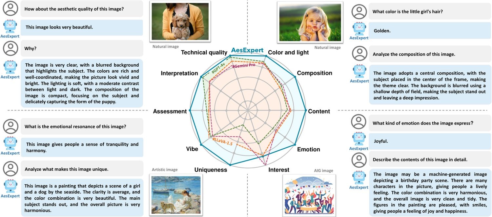
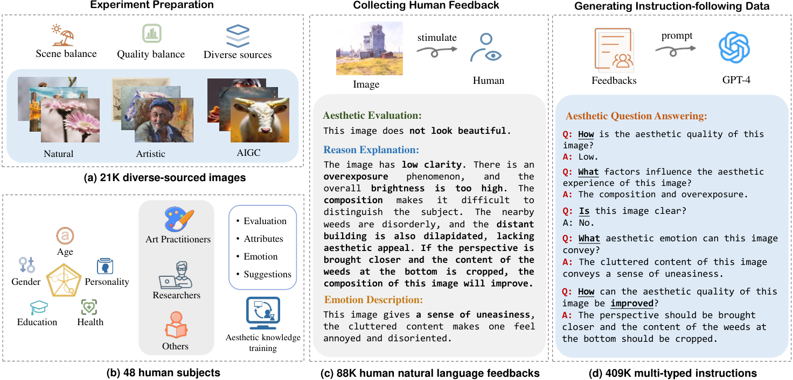
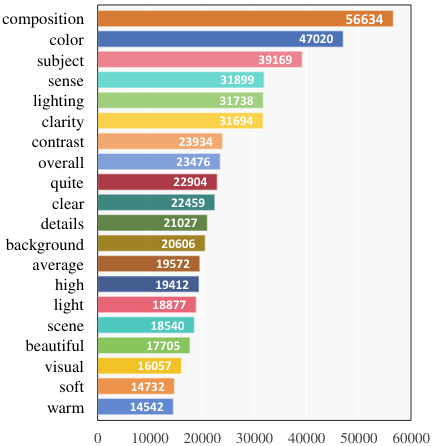
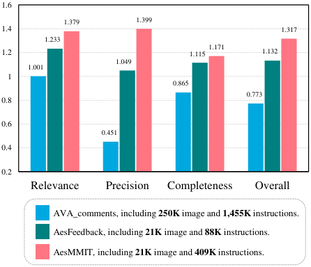

AesExpert: Towards Multi-modality Foundation Model for Image Aesthetics Perception

图 1：本文提出的 AesExpert 在各美学感知维度上的性能表现，与最先进的 GPT-4V、Gemini-Pro-Vision 以及开源的 LLaVA-1.5-13B 作对比。
The highly abstract nature of image aesthetics perception (IAP) poses significant challenge for current multimodal large language models (MLLMs). The lack of human-annotated multi-modality aesthetic data further exacerbates this dilemma, resulting in MLLMs falling short of aesthetics perception capabilities. To address the above challenge, we first introduce a comprehensively annotated Aesthetic Multi-Modality Instruction Tuning (AesMMIT) dataset, which serves as the footstone for building multi-modality aesthetics foundation models. Specifically, to align MLLMs with human aesthetics perception, we construct a corpus-rich aesthetic critique database with 21,904 diverse-sourced images and 88K human natural language feedbacks, which are collected via progressive questions, ranging from coarse-grained aesthetic grades to fine-grained aesthetic descriptions. To ensure that MLLMs can handle diverse queries, we further prompt GPT to refine the aesthetic critiques and assemble the large-scale aesthetic instruction tuning dataset, i.e. AesMMIT, which consists of 409K multi-typed instructions to activate stronger aesthetic capabilities. Based on the AesMMIT database, we fine-tune the open-sourced general foundation models, achieving multi-modality Aesthetic Expert models, dubbed AesExpert. Extensive experiments demonstrate that the proposed AesExpert models deliver significantly better aesthetic perception performances than the state-of-the-art MLLMs, including the most advanced GPT-4V and Gemini-Pro-Vision. Project homepage: https://yipoh.github.io/aes-expert/.
Multimodal large language models (MLLMs) have attracted significant attention in the research community. These foundation models, like GPT-4V (Yang et al., 2023) and LLaVA (Liu et al., 2023b), have demonstrated remarkable progress in serving as general-purpose visual assistants, capable of interacting and collaborating with users (Wu et al., 2023a). Concurrently, their outstanding cross-modality capacities further promote a paradigm shift in the computer vision domain, with researchers seeking to transcend the limitations of traditional task-specific approaches and develop multi-modality foundation models that generalize effectively across various visual tasks (Mi et al., 2023a; Hui et al., 2023; Huang et al., 2020a). Despite the advancements achieved, experiments on current MLLMs reveal obvious limitations in the highly-abstract image aesthetics perception task (Huang et al., 2024c; Zhu et al., 2023c), which covers not only the extensively-studied image aesthetics assessment (IAA) (Zhu et al., 2022; Zhu et al., 2023b; Li et al., 2023a), but also fine-grained aesthetic attribute evaluation (e.g. color, light, and composition), aesthetic emotion analysis, and image aesthetics caption (Ke et al., 2023; Hentschel et al., 2022; Huang et al., 2023). The aesthetic perception abilities of MLLMs are crucial for a wide range of practical applications, such as smart photography, album management, photo recommendation, and image enhancement (Huang et al., 2020b; Hui et al., 2022b). Consequently, it is urgent to build a unified foundation model that possesses general abilities across these aesthetic tasks and can precisely respond to open-ended human queries on image aesthetics perception.
多模态大语言模型（MLLM）在研究界引起了广泛关注。GPT-4V（Yang 等，2023）与 LLaVA（Liu 等，2023b）这类基座模型在充当通用视觉助手方面取得了显著进展，能够与用户交互协作（Wu 等，2023a）。与此同时，它们出色的跨模态能力进一步推动了计算机视觉领域的范式转变，研究者力图超越传统任务专用方法的局限，开发能在各类视觉任务上有效泛化的多模态基座模型（Mi 等，2023a；Hui 等，2023；Huang 等，2020a）。尽管取得了这些进展，对当前 MLLM 的实验仍暴露出其在高度抽象的图像美学感知任务上的明显局限（Huang 等，2024c；Zhu 等，2023c）——该任务不仅涵盖被大量研究的图像美学评价（IAA）（Zhu 等，2022；Zhu 等，2023b；Li 等，2023a），还包括细粒度的美学属性评估（如色彩、光线与构图）、美学情感分析以及图像美学描述（Ke 等，2023；Hentschel 等，2022；Huang 等，2023）。MLLM 的美学感知能力对智能摄影、相册管理、照片推荐与图像增强等大量实际应用至关重要（Huang 等，2020b；Hui 等，2022b）。因此，迫切需要构建一个统一的基座模型，使其在这些美学任务上具备通用能力，并能精确回应人类关于图像美学感知的开放式提问。
Due to the inherently data-hungry nature, current MLLMs rely on vast amounts of multi-modality instruction-following data to meet general-purpose visual and language understanding (Bai et al., 2023). Therefore, researchers have constructed numerous instruction fine-tuning datasets, such as COCO-VQA (Antol et al., 2015), Science QA (Lu et al., 2022) and LLaVA-Instruct-150K (Liu et al., 2023a). However, existing instruction fine-tuning datasets are mainly engineered to enhance the general capacities of MLLMs, e.g. visual question answering (Antol et al., 2015), image captioning (Hossain et al., 2019), object segmentation (Lai et al., 2023) and content understanding (Mi et al., 2023b; Hui et al., 2022a). A notable gap in these datasets is the inadequate focus on visual aesthetics. To address the dilemma, we construct a comprehensively annotated Aesthetic Multi-Modality Instruction Tuning (AesMMIT) dataset, based on which we further fine-tune the open-sourced general foundation models, achieving multi-modality Aesthetic Expert models, dubbed AesExpert, which delivers significantly better aesthetic perception performances than the state-of-the-art MLLMs. Intuitive comparisons and examples are shown in Figure 1. Specifically, this work includes three stages:
由于 MLLM 天然依赖数据，当前模型需要海量多模态指令跟随数据才能满足通用视觉与语言理解的要求（Bai 等，2023）。为此研究者构建了众多指令微调数据集，如 COCO-VQA（Antol 等，2015）、Science QA（Lu 等，2022）与 LLaVA-Instruct-150K（Liu 等，2023a）。然而，现有指令微调数据集主要为增强 MLLM 的通用能力而设计，例如视觉问答（Antol 等，2015）、图像描述（Hossain 等，2019）、目标分割（Lai 等，2023）与内容理解（Mi 等，2023b；Hui 等，2022a）。这些数据集的一个显著缺口是对视觉美学的关注不足。为化解这一困境，我们构建了一个标注全面的美学多模态指令微调数据集（AesMMIT），并在此基础上微调开源的通用基座模型，得到多模态美学专家模型，命名为 AesExpert——其美学感知表现显著优于当前最先进的 MLLM。直观的比较与示例见图 1。具体地，本工作包含三个阶段：
Stage 1: Collecting human aesthetic feedback from subjective experiments. To bridge the gap between MLLMs and human aesthetics perception, we invite human subjects to provide direct feedback on aesthetic perception and understanding via progressive questions, including three parts: 1) The coarse-grained aesthetic evaluation (e.g. This image looks quite beautiful/unattractive.). 2) The fine-grained reasoning and explanation based on elemental aesthetic attributes (e.g. clarity, color, light, image object and composition, etc.). 3) The finer-grained description on aesthetic feeling (e.g. novel shooting view, interesting content and expressed emotions). With the three parts, the collected human feedbacks, denoted as AesFeedback, can capture the basic aesthetic perceptions and the evaluation reasoning process. The AesFeedback dataset contains 88K human critiques on 21,904 multi-sourced images.
阶段 1：从主观实验中采集人类美学反馈。为弥合 MLLM 与人类美学感知之间的差距，我们邀请被试通过渐进式提问对美学感知与理解给出直接反馈，包括三个部分：1) 粗粒度美学评价（例如“这幅图看起来很美／不吸引人”）。2) 基于基本美学属性的细粒度推理与解释（如清晰度、色彩、光线、图像主体与构图等）。3) 对美学感受的更细粒度描述（如新颖的拍摄视角、有趣的内容与所表达的情感）。通过这三个部分，采集到的人类反馈（记为 AesFeedback）能够捕捉基础的美学感知以及评价推理过程。AesFeedback 数据集包含针对 21,904 幅多源图像的 88K 条人类评论。
Stage 2: Refining feedback with GPT for instruction-following data. The constructed AesFeedback dataset plays a crucial role in fine-tuning MLLMs based on aesthetic instructions. However, to fully harness aesthetic capabilities, the dataset should also encompass an aesthetic question-answering component. To obtain rich question-answer pairs, inspired by the existing works (Chen et al., 2023a), we leverage GPT-4 to transform human feedback into instruction-following formats, which include both open-ended and multiple-choice question-answer pairs. To ensure that MLLMs can handle diverse queries, the instruction-following pairs cover diversified aesthetic perception dimensions (e.g. quality, attribute, emotion, interpretation, enhancement, and context reasoning), and commonly-used question types (e.g. Yes-or-No, What, How, Why, and other open-ended questions). Through the above operations, we obtain the final AesMMIT dataset, which consists of 409K multi-typed instructions to activate stronger aesthetic capabilities.
阶段 2：用 GPT 精炼反馈以生成指令跟随数据。所构建的 AesFeedback 数据集在基于美学指令微调 MLLM 时起着关键作用。然而，为充分释放美学能力，数据集还应包含一个美学问答部分。为获得丰富的问答对，受已有工作（Chen 等，2023a）启发，我们借助 GPT-4 把人类反馈转换为指令跟随格式，其中包含开放式与多选两种问答对。为保证 MLLM 能应对多样的提问，这些指令跟随对覆盖多样化的美学感知维度（如质量、属性、情感、阐释、增强与语境推理）以及常用提问类型（如 Yes-or-No 型、What 型、How 型、Why 型以及其他开放式问题）。通过上述操作，我们得到最终的 AesMMIT 数据集，它由 409K 条多类型指令构成，用以激活更强的美学能力。
Stage 3: Building multi-modality aesthetics foundation model based on the proposed AesMMIT. We introduce the instruction fine-tuning to improve the open-sourced MLLMs (Liu et al., 2023a; Ye et al., 2023b) based on the AesMMIT dataset, which not only enables the models to retain their original general knowledge but also facilitates the aesthetics perception capabilities, obtaining the multi-modality Aesthetic Expert models, dubbed AesExpert.
阶段 3：基于所提 AesMMIT 构建多模态美学基座模型。我们引入指令微调，在 AesMMIT 数据集上改进开源 MLLM（Liu 等，2023a；Ye 等，2023b）——这不仅使模型保留原有通用知识，也促进其美学感知能力——从而得到多模态美学专家模型，命名为 AesExpert。
The contributions of this study are summarized as follows:
本研究的主要贡献总结如下：
Aesthetic instruction-following dataset. We construct a corpus-rich aesthetic critique database with 21,904 diverse-sourced images and 88K human natural language feedbacks to align MLLMs with human aesthetics perception. Further, we prompt GPT to refine the human aesthetic critiques and assemble the large-scale aesthetic instruction tuning dataset (AesMMIT) to ensure that MLLMs can handle diverse queries, which consists of 409K instructions covering multiple aesthetic perception dimensions, to activate stronger aesthetic capabilities of MLLMs.
美学指令跟随数据集。我们构建了一个语料丰富的美学评论数据库，含 21,904 幅多源图像与 88K 条人类自然语言反馈，用于让 MLLM 与人类美学感知对齐。此后，我们用 GPT 精炼人类美学评论，并汇编出大规模的美学指令微调数据集（AesMMIT），以保证 MLLM 能应对多样提问；该数据集由覆盖多个美学感知维度的 409K 条指令构成，用以激活 MLLM 更强的美学能力。
AesExpert model. We propose multi-modality aesthetic expert models with the aid of the proposed AesMMIT dataset via instruction fine-tuning. Extensive experiments demonstrate that the proposed AesExpert models deliver significantly better aesthetic perception performances than the state-of-the-art MLLMs, including the most advanced GPT-4V and Gemini-Pro-Vision.
AesExpert 模型。我们借助所提 AesMMIT 数据集、通过指令微调提出了多模态美学专家模型。大量实验表明，所提 AesExpert 模型的美学感知表现显著优于当前最先进的 MLLM，包括最先进的 GPT-4V 与 Gemini-Pro-Vision。
Open source. We release the following sources to the community: (1) the constructed aesthetic multi-modality instruction tuning dataset; (2) the proposed AesExpert model, including codes and checkpoints; (3) the visual AesExpert-Chatbot demo. We believe this work would shed light on building more advanced MLLMs with comprehensive aesthetic capabilities.
开源。我们向社区发布以下资源：(1) 所构建的美学多模态指令微调数据集；(2) 所提出的 AesExpert 模型，含代码与检查点；(3) 可视化的 AesExpert-Chatbot 演示。我们相信，本工作将为构建具备全面美学能力的更先进 MLLM 带来启发。

图 2：本文的数据集构建流程。首先，我们依据场景、质量与来源筛选出 21K 幅多源图像，并邀请 48 名符合综合标准的被试。随后，我们采集 88K 条关于图像美学感知的人类反馈。最后，人类反馈被转换为 409K 条指令跟随对（即 AesMMIT 数据集）。
Recently, large language models (LLMs), such as GPT-3 (OpenAI, 2023), Flan-T5 (Chung et al., 2022) and LLaMA (Touvron et al., 2023), have made remarkable progress in pure-textual tasks. The success of LLMs has also driven the research on vision-language interaction, resulting in the development of various multi-modality foundation models, e.g. LLaVA (Liu et al., 2023b), MiniGPT-4 (Zhu et al., 2023a), mPLUG-Owl (Ye et al., 2023a), Otter (Li et al., 2023b) and Instruct-BLIP (Dai et al., 2023). These models typically contain a pre-trained visual encoder for image processing, an LLM for interpreting instructions and generating responses, and a cross-modality module to align the vision encoder with the LLM (Mi et al., 2024). Despite their impressive performance in general-purpose visual tasks, their performance in handling image aesthetics perception remains underexplored. Therefore, this work is dedicated to building the multi-modality aesthetic large model.
近来，GPT-3（OpenAI，2023）、Flan-T5（Chung 等，2022）与 LLaMA（Touvron 等，2023）等大语言模型（LLM）在纯文本任务上取得了显著进展。LLM 的成功也推动了视觉—语言交互的研究，催生了多种多模态基座模型，如 LLaVA（Liu 等，2023b）、MiniGPT-4（Zhu 等，2023a）、mPLUG-Owl（Ye 等，2023a）、Otter（Li 等，2023b）与 Instruct-BLIP（Dai 等，2023）。这些模型通常包含一个用于图像处理的预训练视觉编码器、一个用于解读指令并生成回复的 LLM，以及一个把视觉编码器与 LLM 对齐的跨模态模块（Mi 等，2024）。尽管它们在通用视觉任务上表现亮眼，其在处理图像美学感知上的表现仍缺乏探索。因此，本工作致力于构建多模态美学大模型。
Instruction tuning is an optimization method for multi-modality foundation models, aiming to improve their ability to perform specific tasks (Liu et al., 2023b). With the development of MLLMs, researchers often employ ChatGPT (OpenAI, 2023) or GPT-4 (Yang et al., 2023) to generate diverse and expansive instruction-following data. For example, Zhu et al. (Zhu et al., 2023a) employed GPT-3.5 to generate and improve detailed captions for high-quality instruction-following data (MiniGPT-4), which are mainly designed for general visual tasks. Liu et al. (Liu et al., 2023b; Liu et al., 2023a) proposed the multimodal instruction-following dataset (LLaVA-Instruct-150K) based on the existing COCO (Lin et al., 2015) bounding box and caption dataset using GPT-4. In InstructBLIP (Dai et al., 2023), the authors transformed 13 vision-language tasks (e.g. OCR-VQA (Mishra et al., 2019)) into the instruction-following format for instruction tuning. Chen et al. (Chen et al., 2023a) proposed a large-scale image-text dataset featuring 100K highly descriptive captions generated by GPT-4V and 1.2M high-quality captions generated by the proposed caption model, named ShareGPT4V. A more comprehensive survey can be found in (Zhang et al., 2024).
指令微调是面向多模态基座模型的一种优化方法，旨在提升其执行特定任务的能力（Liu 等，2023b）。随着 MLLM 的发展，研究者常借助 ChatGPT（OpenAI，2023）或 GPT-4（Yang 等，2023）生成多样而大规模的指令跟随数据。例如，Zhu 等（Zhu 等，2023a）用 GPT-3.5 生成并改进详细描述，以构建高质量的指令跟随数据（MiniGPT-4），这些数据主要面向通用视觉任务。Liu 等（Liu 等，2023b；Liu 等，2023a）基于已有的 COCO（Lin 等，2015）边界框与字幕数据集、用 GPT-4 提出了多模态指令跟随数据集（LLaVA-Instruct-150K）。在 InstructBLIP（Dai 等，2023）中，作者把 13 项视觉—语言任务（如 OCR-VQA（Mishra 等，2019））转换为指令跟随格式用于指令微调。Chen 等（Chen 等，2023a）提出了一个大规模图文数据集，含由 GPT-4V 生成的 100K 条高描述性字幕和由其所提字幕模型生成的 120 万条高质量字幕，命名为 ShareGPT4V。更全面的综述见（Zhang 等，2024）。
The existing instruction tuning datasets are mainly constructed for general visual tasks, and the lack of image aesthetic data limits the aesthetic perception ability of MLLMs to a large extent. Further, the existing studies suggested that hallucination has become one of the most urgent problems for current MLLMs (Han et al., 2024; Huang et al., 2024b), therefore, using MLLM to directly generate instruction fine-tuning data for aesthetic tasks may further exacerbate this situation. To bridge this gap, this paper presents a corpus-rich aesthetic critique database by collecting human natural language feedback, based on which we establish a comprehensively annotated aesthetic multi-modality instruction tuning dataset, i.e. AesMMIT. Further, we propose multi-modality aesthetic expert models based on aesthetic instruction fine-tuning, achieving significantly better aesthetic perception performances.
现有指令微调数据集主要面向通用视觉任务构建，图像美学数据的缺乏在很大程度上限制了 MLLM 的美学感知能力。此外，已有研究表明幻觉已成为当前 MLLM 最紧迫的问题之一（Han 等，2024；Huang 等，2024b），因此用 MLLM 直接生成面向美学任务的指令微调数据可能进一步加剧这一状况。为填补这一空白，本文通过采集人类自然语言反馈，提出了一个语料丰富的美学评论数据库，并在此基础上建立了标注全面的美学多模态指令微调数据集，即 AesMMIT。此外，我们基于美学指令微调提出了多模态美学专家模型，取得了显著更优的美学感知表现。
In this section, we provide a detailed expatiation of the process in building the AesMMIT dataset, which is illustrated in Figure 2. Specifically, subsection 3.1 describes the preparation of the subjective experiment including the collection of images and the recruitment of participants. Subsection 3.2 elaborates how we conduct the subjective experiment to obtain the 88K human feedbacks on 21,904 multi-sourced images. Subsection 3.3 explains how we prompt GPT-4 to refine the aesthetic critiques and obtain the 409K instruction-following data covering multiple aesthetic perception dimensions and commonly-used question types.
本节详述 AesMMIT 数据集的构建过程，如图 2 所示。具体地，3.1 节描述主观实验的准备工作，包括图像采集与被试招募；3.2 节阐述我们如何开展主观实验，以获取针对 21,904 幅多源图像的 88K 条人类反馈；3.3 节说明我们如何提示 GPT-4 精炼美学评论，并得到覆盖多个美学感知维度与常用提问类型的 409K 条指令跟随数据。
Image Collection: To guarantee the diversity of image types, we first collect a large number of images from various sources (Xu et al., 2012a), including natural images (NIs), artistic images (AIs) and artificial intelligence-generated images (AGIs), as shown in Figure 2(a). Then, we use a well-trained scene classification model (Radford et al., 2021) to automatically predict the scene label for each image, based on which we sampled these images to maintain scene diversity. To reduce the long-tail distribution of randomly sampled images (Yang et al., 2024; Xu et al., 2011), we add 1239 high-aesthetic images from LITE (Unsplash, 2023) and Impressions (Kruk et al., 2023) datasets, and 1944 low-quality images from SPAQ (Fang et al., 2020) and KonIQ-10K (Hosu et al., 2020) datasets. Finally, a total of 21,904 images are collected, which are further sent to human subjects to collect aesthetic feedbacks based on subjective experiments. Detailed image source of the AesMMIT dataset is summarized in Table 1.
图像采集：为保证图像类型的多样性，我们首先从多种来源（Xu 等，2012a）采集了大量图像，包括自然图像（NI）、艺术图像（AI）与人工智能生成图像（AGI），如图 2(a) 所示。随后，我们用一个训练良好的场景分类模型（Radford 等，2021）自动预测每幅图像的场景标签，并据此采样以保持场景多样性。为缓解随机采样图像的长尾分布（Yang 等，2024；Xu 等，2011），我们额外加入来自 LITE（Unsplash，2023）与 Impressions（Kruk 等，2023）数据集的 1239 幅高美学图像，以及来自 SPAQ（Fang 等，2020）与 KonIQ-10K（Hosu 等，2020）数据集的 1944 幅低质量图像。最终共采集到 21,904 幅图像，它们被交给被试，以在主观实验基础上采集美学反馈。AesMMIT 数据集的详细图像来源汇总于表 1。
Subject Selection: To ensure the completeness of annotation and the diversity of corpus, we recruit subjects by considering five different perspectives, including age, gender, education, health status and personality, as shown in Figure 2(b). Specifically, we ensure that each subject is in good health and passes the Ishihara color blindness test (Yang et al., 2022). To enhance the quality of annotation, all subjects need to have a high school degree or above, and some experience in photography. Following the existing works (Xu et al., 2013; Wu et al., 2024a; Xu et al., 2012b), to ensure the diversity of annotation, we further consider age distribution, gender balance, and personality diversity (Li et al., 2020). Finally, considering the difficulty of labeling artistic and artificial intelligence-generated images, we specially invited 6 art practitioners and 9 researchers in the field of image aesthetics evaluation to join the subjective experiment and focus on labeling these two kinds of images. In addition, we also organize two aesthetic knowledge training sessions before the experiment covering evaluation, attribute, emotion and suggestion, aiming to provide them with a more comprehensive understanding of image aesthetics annotation. Finally, based on the principle of voluntary participation (Yang et al., 2022), we invite 48 eligible human subjects to ensure the validity and reliability of annotations.
被试选择：为保证标注的完整性与语料的多样性，我们从年龄、性别、教育、健康状况与性格五个不同维度招募被试，如图 2(b) 所示。具体地，我们确保每名被试身体健康并通过石原色盲检测（Yang 等，2022）。为提升标注质量，所有被试需具备高中及以上学历，并有一定摄影经验。沿用已有工作（Xu 等，2013；Wu 等，2024a；Xu 等，2012b），为保证标注多样性，我们进一步考虑年龄分布、性别均衡与性格多样性（Li 等，2020）。最后，考虑到艺术图像与人工智能生成图像的标注难度，我们专门邀请了 6 名艺术从业者和 9 名图像美学评价领域的研究者参与主观实验，重点标注这两类图像。此外，我们还在实验前组织了两次美学知识培训，涵盖评价、属性、情感与建议，旨在让他们对图像美学标注有更全面的理解。最后，基于自愿参与原则（Yang 等，2022），我们邀请了 48 名符合条件的被试，以保证标注的有效性与可靠性。
To enhance the understanding and interpretation capabilities of MLLMs in terms of aesthetics perception, we invite 48 subjects to contribute their insights and descriptions on image aesthetics through progressive questions, as illustrated in Figure 2(c). This process includes three parts for each test image from coarse to fine.
为增强 MLLM 在美学感知上的理解与阐释能力，我们邀请 48 名被试通过渐进式提问贡献他们对图像美学的见解与描述，如图 2(c) 所示。对每幅测试图像，该过程由粗到细包含三个部分。
1) Coarse-grained aesthetic evaluation. The focus of this question is to collect simple aesthetic grade judgments on images. Participants could express their overall impression of image aesthetics using simple sentences such as good-looking, beautiful, average or bad-looking, etc. Referring to common settings in the field of image quality assessment (Deng et al., 2017; Kong et al., 2016), we recommend that experimental participants establish a uniform measure of five aesthetic grades and guarantee language diversity.
1) 粗粒度美学评价。该问题的重点是采集对图像的简单美学等级判断。参与者可用“好看”“优美”“一般”“难看”等简单句式表达自己对图像美学的整体印象。参考图像质量评价领域的常见设置（Deng 等，2017；Kong 等，2016），我们建议实验参与者建立统一的五级美学度量标准，并保证语言的多样性。
表 1：图像来源数据集概览。
| Type | Dataset | Sampled Size |
|---|---|---|
| NIs | AADB (Kong et al., 2016) | 1096 |
| PARA (Yang et al., 2022) | 3694 | |
| TAD66K (He et al., 2022) | 4003 | |
| LITE (Unsplash, 2023) | 1087 | |
| Impressions (Kruk et al., 2023) | 152 | |
| SPAQ (Fang et al., 2020) | 1153 | |
| KonIQ-10K (Hosu et al., 2020) | 791 | |
| AIs | BAID (Yi et al., 2023) | 2970 |
| CAD (Li et al., 2018) | 59 | |
| ArtEmis (Achlioptas et al., 2021) | 1957 | |
| AGIs | DiffusionDB (Wang et al., 2023) | 4228 |
| AGIQA-3K (Zhang et al., 2023) | 570 | |
| AGIQA-1K (Li et al., 2023c) | 144 |
2) Fine-grained reasoning and explanation. On the basis of simple aesthetic grade judgments, this question is designed to mine the detailed reasons that influence human aesthetic judgments (Huang et al., 2024a). In this experiment, all participants need to explain what specific aspects of the image enhance or reduce the aesthetic appeal, such as clarity, color, light, image object and composition. In addition, we encourage participants to provide suggestions for the improvement of low-aesthetics images.
2) 细粒度推理与解释。在简单美学等级判断的基础上，该问题旨在挖掘影响人类美学判断的详细原因（Huang 等，2024a）。实验中，所有参与者需说明图像中哪些具体方面提升或削弱了美感，如清晰度、色彩、光线、图像主体与构图。此外，我们鼓励参与者为低美感图像提供改进建议。
3) Finer-grained description on aesthetic feeling. This question breaks through the description of the inherent aesthetic attributes and aims to explore the impact of human emotions on aesthetic perception when viewing images. Participants need to describe some of the more abstract emotional factors in the image, e.g. novel shooting view, interesting content, expressed emotions, etc. Furthermore, we encourage participants to analyze the impact of these factors on image aesthetics.
3) 对美学感受的更细粒度描述。该问题突破了对固有美学属性的描述，旨在探索观看图像时人类情感对美学感知的影响。参与者需描述图像中一些更抽象的情感因素，例如新颖的拍摄视角、有趣的内容、所表达的情感等。此外，我们鼓励参与者分析这些因素对图像美感的影响。
The setting of the subjective experiment refers to the ITU-R Recommendation BT.500-13 standard (ITU, 2012). By systematically collecting feedback from the above three parts, we construct the corpus-rich aesthetic critique database, called AesFeedback, which contains 88K human feedbacks on 21,904 multi-sourced images. Since these annotations are all provided by human subjects, AesFeedback can capture the characteristics of basic aesthetic perceptions and the evaluation reasoning process, providing a valuable resource for improving the aesthetic capabilities of MLLMs.
主观实验的设置参照 ITU-R BT.500-13 建议书标准（ITU，2012）。通过系统地采集上述三个部分的反馈，我们构建了语料丰富的美学评论数据库，称为 AesFeedback，它包含针对 21,904 幅多源图像的 88K 条人类反馈。由于这些标注全部由人类被试提供，AesFeedback 能够捕捉基础美学感知的特征以及评价推理过程，为提升 MLLM 的美学能力提供了宝贵资源。

图 3：AesMMIT 数据库中使用频次前 20 的词统计。
While the corpus-rich aesthetic critiques in the AesFeedback dataset can provide rich knowledge for aesthetic instruction tuning of MLLMs, we further design more instruction-following data to allow MLLMs to respond to a variety of human queries, achieving stronger aesthetic capabilities. Similar to existing works (Chen et al., 2023a; Wu et al., 2023b), we leverage GPT-4 to transform human feedback into instruction-following formats, as illustrated in Figure 2(d). Through this process, the proposed AesMMIT dataset includes 409K instruction-response pairs, with its details as follows.
AesFeedback 数据集中语料丰富的美学评论虽能为 MLLM 的美学指令微调提供丰富知识，我们仍进一步设计了更多指令跟随数据，使 MLLM 能回应人类的各种提问，从而获得更强的美学能力。与已有工作（Chen 等，2023a；Wu 等，2023b）类似，我们借助 GPT-4 把人类反馈转换为指令跟随格式，如图 2(d) 所示。经此过程，所提 AesMMIT 数据集包含 409K 条指令—回复对，其细节如下。
Aesthetic Description: Similar to aesthetic caption (Sheng et al., 2023), the ability of image aesthetic description is crucial for MLLMs. As shown in Figure 2(c), the collected AesFeedback dataset contains direct and comprehensive human natural language critiques on image aesthetics. Furthermore, these critiques provide aesthetic interpretation from overall aesthetic grades to fine-grained aesthetic attributes (e.g. clarity, color, light, and image object), which can activate the preliminary aesthetic interpretation abilities of MLLMs (see Figure 4). Therefore, we directly use the questions in the AesFeedback dataset as instructions and human critiques as responses, based on which we obtain the 88K instruction-following pairs of the proposed AesMMIT dataset.
美学描述：与美学字幕（Sheng 等，2023）类似，图像美学描述能力对 MLLM 至关重要。如图 2(c) 所示，采集到的 AesFeedback 数据集包含直接而全面的人类自然语言美学评论。此外，这些评论提供了从整体美学等级到细粒度美学属性（如清晰度、色彩、光线与图像主体）的美学阐释，能够激活 MLLM 初步的美学阐释能力（见图 4）。因此，我们直接把 AesFeedback 数据集中的问题作为指令、把人类评论作为回复，由此得到所提 AesMMIT 数据集中的 88K 条指令跟随对。
Aesthetic Question Answering: In addition to directly adopting the AesFeedback as aesthetic instruction-following data, we further propose a GPT-assist approach to refine the aesthetic critiques and assemble a larger-scale aesthetic question-answering subset (AesVQA). Inspired by Q-Instruct (Wu et al., 2023b) and ShareGPT (Chen et al., 2023a), we prompt GPT-4 to generate diverse-style open-ended questions and provide corresponding brief answers, where both the questions and answers are based on human aesthetic descriptions. To ensure that MLLMs can handle diverse queries during the interaction, the questions are generated to cover commonly used question types. Specifically, Yes-or-No-style questions are straightforward queries that demand a simple yes or no as an answer, which are mainly used to provide a clear, binary response. What-style questions are leveraged to measure more comprehensive and complex aesthetic perception (e.g. various aesthetic attributes). How-style questions are used to ask more details about aesthetic emotion, aesthetic attributes, and improvement suggestions; Why-style questions are employed to explore the foundational aspects of what makes images aesthetically appealing or unappealing, revealing the rationale of beauty and visual appeal. To ensure the diversity of instructions, following the existing works (Liu et al., 2023a; Lu et al., 2022), besides the direct answers, we also generate several wrong alternatives for the questions and convert them into an additional multi-choice question format (Wu et al., 2024b). Through the above process, we obtain the final AesMMIT dataset, which consists of 409K multi-typed instructions, aiming to activate stronger aesthetic capabilities. Figure 3 shows the frequently occurring words in the proposed AesMMIT dataset. It can be observed that most nouns, adjectives and adverbs are related to image aesthetic description, which is quite different from common semantic-based tasks.
美学问答：除直接采用 AesFeedback 作为美学指令跟随数据外，我们还提出一种 GPT 辅助方法来精炼美学评论，并汇编出规模更大的美学问答子集（AesVQA）。受 Q-Instruct（Wu 等，2023b）与 ShareGPT（Chen 等，2023a）启发，我们提示 GPT-4 生成风格多样的开放式问题并给出相应的简要回答，问题与回答都基于人类的美学描述。为保证 MLLM 在交互中能应对多样提问，生成的问题覆盖常用提问类型。具体地，Yes-or-No 型问题是直接提问，只需回答是或否，主要用于给出清晰的二元回应；What 型问题用于衡量更全面、更复杂的美学感知（如各类美学属性）；How 型问题用于询问有关美学情感、美学属性与改进建议的更多细节；Why 型问题用于探究图像为何具有或不具有美感的基础层面，揭示美与视觉吸引力背后的缘由。为保证指令的多样性，沿用已有工作（Liu 等，2023a；Lu 等，2022），除直接回答外，我们还为问题生成若干错误选项，并把它们转换为额外的多选题形式（Wu 等，2024b）。通过上述过程，我们得到最终的 AesMMIT 数据集，它由 409K 条多类型指令构成，旨在激活更强的美学能力。图 3 展示了所提 AesMMIT 数据集中高频出现的词。可以看到，多数名词、形容词与副词都与图像美学描述相关，这与常见的基于语义的任务差异明显。
The proposed AesExpert model follows the design of LLaVA-1.5 (Liu et al., 2023a), which includes three components: (1) A visual model based on the CLIP-ViT-L14 (Radford et al., 2021) with an input size of 336336, which converts the input image into 576 tokens. (2) A visual-language projector based on two-layer multi-layer perception (MLP), which is employed to connect the visual modality and language modality. (3) A language model based on the open-sourced Vicuna-v1.5 (Zheng et al., 2024), which is used to interpret instructions and generate responses. In this work, we build the AesExpert models based on two variants of LLaVA-1.5, including LLaVA-1.5-7B and LLaVA-1.5-13B. In addition, we also introduce the mPLUG-Owl2 (Ye et al., 2023b) as the backbone to validate the aesthetic perception performance based on the AesMMIT dataset. The structures for these multi-modality foundation models are summarized in Table 2.
所提 AesExpert 模型沿用 LLaVA-1.5（Liu 等，2023a）的设计，包含三个组成部分：(1) 基于 CLIP-ViT-L14（Radford 等，2021）的视觉模型，输入尺寸为 336336，把输入图像转换为 576 个 token。(2) 基于两层多层感知机（MLP）的视觉—语言投影器，用于连接视觉模态与语言模态。(3) 基于开源 Vicuna-v1.5（Zheng 等，2024）的语言模型，用于解读指令并生成回复。本工作基于 LLaVA-1.5 的两个变体构建 AesExpert 模型，包括 LLaVA-1.5-7B 与 LLaVA-1.5-13B。此外，我们还引入 mPLUG-Owl2（Ye 等，2023b）作为骨干网络，以验证基于 AesMMIT 数据集的美学感知表现。这些多模态基座模型的结构汇总于表 2。
表 2：用于美学指令微调的多模态基座模型结构。
| Model | Visual Model | VL | Language Model |
|---|---|---|---|
| LLaVA-1.5-7B | CLIP-ViT-L14 | MLP | Vicuna-v1.5-7B |
| LLaVA-1.5-13B | CLIP-ViT-L14 | MLP | Vicuna-v1.5-13B |
| mPLUG-Owl2 | CLIP-ViT-L14 | Abstractor | LLaMA2-7B |
表 3：所提 AesExpert 与现有 MLLM 的性能比较。AesA：美学评价；AesI：美学阐释；T. Q.：技术质量；C. L.：色彩与光线；Comp.：构图；Cont.：内容；Emot.：情感；Inte.：趣味性；Uniq.：独特性；L-13B：LLaVA-1.5-13B；Owl2：mPLUG-Owl2；L-7B：LLaVA-1.5-7B。总分为四个维度得分的平均值。
| Model | Aesthetic Perception | Aesthetic Empathy | AesA | AesI | Overall | Rank | ||||||||
|---|---|---|---|---|---|---|---|---|---|---|---|---|---|---|
| T. Q. | C. L. | Comp. | Cont. | Score | Emot. | Inte. | Uniq. | Vibe | Score | Score | Score | |||
| AesExpert (L-13B) | 70.83% | 80.63% | 81.75% | 76.60% | 79.54% | 82.94% | 80.65% | 93.10% | 88.56% | 84.89% | 59.57% | 1.340 | 89.50% | 1 |
| AesExpert (Owl2) | 70.19% | 79.47% | 79.56% | 71.28% | 77.64% | 80.66% | 83.87% | 89.66% | 86.31% | 82.68% | 56.32% | 1.336 | 87.56% | 2 |
| AesExpert (L-7B) | 72.44% | 79.38% | 80.66% | 74.47% | 78.57% | 82.05% | 83.87% | 86.21% | 87.81% | 84.04% | 53.25% | 1.317 | 86.89% | 3 |
| GPT-4V | 69.02% | 74.66% | 71.72% | 65.57% | 72.08% | 65.06% | 72.41% | 62.07% | 80.15% | 70.16% | 50.86% | 1.301 | 80.80% | 4 |
| ShareGPT4V | 62.18% | 71.90% | 69.29% | 64.89% | 69.18% | 66.48% | 80.65% | 68.97% | 78.72% | 70.75% | 47.82% | 1.296 | 79.34% | 5 |
| LLaVA-1.5-13B | 67.63% | 74.65% | 70.09% | 68.44% | 71.61% | 67.15% | 80.65% | 75.86% | 81.18% | 72.07% | 49.82% | 1.222 | 78.93% | 6 |
| Gemini Pro Vision | 65.08% | 74.57% | 72.24% | 67.97% | 71.99% | 66.87% | 87.50% | 70.00% | 79.09% | 71.37% | 49.38% | 1.222 | 78.74% | 7 |
| mPLUG-Owl2 | 60.90% | 70.57% | 68.30% | 62.77% | 67.89% | 65.60% | 77.42% | 65.52% | 78.07% | 69.89% | 50.57% | 1.182 | 76.64% | 8 |
| Q-Instruct | 66.03% | 74.48% | 73.68% | 68.09% | 72.61% | 68.64% | 83.86% | 75.86% | 80.00% | 72.68% | 52.86% | 1.020 | 75.04% | 9 |
| LLaVA-1.5-7B | 53.85% | 70.16% | 67.40% | 59.93% | 66.32% | 62.49% | 80.65% | 75.85% | 78.93% | 68.32% | 45.46% | 1.157 | 73.95% | 10 |
| Qwen-VL | 54.81% | 66.25% | 62.91% | 60.64% | 63.21% | 58.67% | 83.87% | 72.41% | 73.90% | 64.18% | 46.25% | 1.192 | 73.21% | 11 |
| LLaVA | 46.79% | 63.59% | 65.30% | 64.54% | 62.43% | 58.61% | 80.63% | 65.52% | 75.83% | 64.68% | 45.96% | 1.125 | 71.39% | 12 |
| InstructBLIP | 37.82% | 55.36% | 55.43% | 57.09% | 54.29% | 49.64% | 58.06% | 51.72% | 61.50% | 53.89% | 46.54% | 1.126 | 66.83% | 13 |
| IDEFICS-Instruct | 37.50% | 52.87% | 52.84% | 51.06% | 50.82% | 43.93% | 64.52% | 62.07% | 64.06% | 50.82% | 45.00% | 1.180 | 66.16% | 14 |
| Otter | 35.90% | 54.28% | 51.65% | 51.06% | 50.96% | 48.42% | 70.97% | 51.72% | 63.21% | 53.64% | 44.86% | 1.027 | 63.04% | 15 |
| MiniGPT-v2 | 56.73% | 56.44% | 51.74% | 50.00% | 54.18% | 52.52% | 58.06% | 44.83% | 58.07% | 54.36% | 31.11% | 1.003 | 59.99% | 16 |
| GLM | 55.77% | 54.61% | 51.25% | 48.94% | 52.96% | 53.13% | 70.97% | 44.83% | 55.29% | 53.96% | 37.79% | 0.932 | 59.48% | 17 |
| MiniGPT-4 | 39.42% | 41.31% | 42.67% | 44.33% | 41.93% | 39.78% | 38.71% | 24.14% | 39.04% | 39.35% | 38.57% | 0.999 | 54.94% | 18 |
| TinyGPT-V | 21.79% | 24.52% | 22.13% | 28.01% | 23.71% | 30.36% | 29.03% | 31.03% | 35.40% | 32.04% | 43.57% | 0.701 | 42.36% | 19 |
In general, the training of open-sourced MLLMs (Liu et al., 2023b; Liu et al., 2023a; Zhu et al., 2023a) includes two stages: aligning the representation space of the visual backbone and the LLM with million-scale web data (Lu et al., 2022), and visual instruction tuning with a combination of multi-modality datasets (Chen et al., 2023a; Dai et al., 2023). Considering that our purpose is to improve the aesthetic perception ability of the current MLLMs, we directly use the proposed AesMMIT dataset to perform supervised instruction fine-tuning on the models pre-trained on general-purpose visual tasks (Liu et al., 2023a). Following existing works (Wu et al., 2023b; Chen et al., 2023b), supervised instruction fine-tuning not only enables the models to retain their original general knowledge but also facilitates the aesthetics perception capabilities. In this work, to enhance the training efficiency and compare fairly, we freeze the vision model and focus on fine-tuning the projector and the language model. Based on supervised instruction fine-tuning, we implemented three different versions of multi-modality aesthetic expert models.
一般而言，开源 MLLM（Liu 等，2023b；Liu 等，2023a；Zhu 等，2023a）的训练包含两个阶段：用百万量级的网络数据对齐视觉骨干与 LLM 的表示空间（Lu 等，2022），以及用多模态数据集的组合做视觉指令微调（Chen 等，2023a；Dai 等，2023）。考虑到我们的目标是提升当前 MLLM 的美学感知能力，我们直接用所提 AesMMIT 数据集，对已在通用视觉任务上预训练的模型（Liu 等，2023a）执行有监督指令微调。沿用已有工作（Wu 等，2023b；Chen 等，2023b），有监督指令微调不仅使模型保留原有通用知识，也促进其美学感知能力。本工作中，为提升训练效率并保证公平比较，我们冻结视觉模型，专注微调投影器与语言模型。在有监督指令微调的基础上，我们实现了三个不同版本的多模态美学专家模型。
Training setting: In this work, we finetune three pre-trained MLLMs based on the constructed AesMMIT dataset in full schedule mode, including LLaVA-1.5-7B (Vicuna-v1.5-7B) (Liu et al., 2023a), LLaVA-1.5-13B (Vicuna-v1.5-13B) (Liu et al., 2023a) and mPLUG-Owl2 (LLaMA-2-7B) (Ye et al., 2023b). In implementation, to ensure fairness, we follow the default hyper-parameters provided by the original models. All models are trained based on the GPU server with 8 NVIDIA Tesla A100 80G, and the evaluation experiments are conducted on the GPU server with 2 NVIDIA RTX 4090 24G.
训练设置：本工作基于所构建的 AesMMIT 数据集，以全量调度模式微调三个预训练 MLLM，包括 LLaVA-1.5-7B（Vicuna-v1.5-7B）（Liu 等，2023a）、LLaVA-1.5-13B（Vicuna-v1.5-13B）（Liu 等，2023a）与 mPLUG-Owl2（LLaMA-2-7B）（Ye 等，2023b）。实现中，为保证公平，我们沿用各原始模型提供的默认超参数。所有模型在配备 8 张 NVIDIA Tesla A100 80G 的 GPU 服务器上训练，评测实验在配备 2 张 NVIDIA RTX 4090 24G 的 GPU 服务器上进行。
Benchmark: To verify the performance of our proposed AesExpert models on image aesthetics perception, extensive experiments and comparisons are conducted on the AesBench (Huang et al., 2024c), which is a well-designed benchmark for MLLMs on aesthetics perception evaluation. Specifically, AesBench contains 2,800 images and four evaluation criteria designed from four dimensions, including (1) Aesthetic Perception (AesP) focuses on the ability of MLLMs to recognize and understand aesthetic attributes. (2) Aesthetic Empathy (AesE) evaluates the ability of MLLMs to resonate with the emotional aspects conveyed through aesthetic expressions like humans. (3) Aesthetic Assessment (AesA) evaluates the ability of MLLMs to judge image aesthetics quality. (4) Aesthetic Interpretation (AesI) involves the ability of MLLMs to interpret and analyze the reasons for aesthetic quality. Each dimension contains 2,800 questions and correct answers. For the first three dimensions, the accuracy of the answers is used to measure the performance of the model, while the AesI is evaluated based on GPT scoring.
基准：为验证所提 AesExpert 模型在图像美学感知上的性能，我们在 AesBench（Huang 等，2024c）上开展了大量实验与比较——这是一个专为评估 MLLM 美学感知能力而设计的基准。具体地，AesBench 含 2,800 幅图像，并从四个维度设计了四项评测标准，包括：(1) 美学感知（AesP）考察 MLLM 识别与理解美学属性的能力；(2) 美学共情（AesE）评估 MLLM 像人类一样对美学表达所传递的情感层面产生共鸣的能力；(3) 美学评价（AesA）评估 MLLM 判断图像美学质量的能力；(4) 美学阐释（AesI）考察 MLLM 阐释与分析美学质量成因的能力。每个维度含 2,800 个问题及正确答案。前三个维度用答案准确率衡量模型性能，而 AesI 采用 GPT 评分评估。
表 4：基线 MLLM 与所提 AesExpert 模型在美学感知能力上的比较。
| MLLM | Perceptual Dimensions | Image Sources | Question Types | Overall | ||||||||
|---|---|---|---|---|---|---|---|---|---|---|---|---|
| Tec. Qua. | Col. Lig. | Composition | Content | NIs | AIs | AGIs | Yes-No | What | How | Why | ||
| BL (mPLUG-Owl2) | 60.90% | 70.57% | 68.30% | 62.77% | 72.23% | 64.71% | 64.10% | 65.59% | 58.64% | 73.02% | 80.73% | 67.89% |
| AesExpert | 70.19% | 79.47% | 79.56% | 71.28% | 79.78% | 73.32% | 78.72% | 72.75% | 66.43% | 89.32% | 89.02% | 77.64% |
| Improvement | +9.29% | +8.90% | +11.26% | +8.51% | +7.55% | +8.61% | +14.62% | +7.16% | +7.79% | +16.30% | +8.29% | +9.75% |
| BL (LLaVA-1.5-7b) | 53.85% | 70.16% | 67.40% | 59.93% | 69.10% | 65.71% | 62.37% | 62.36% | 58.92% | 70.71% | 81.22% | 66.32% |
| AesExpert | 72.44% | 79.38% | 80.66% | 74.47% | 81.46% | 74.69% | 77.93% | 70.74% | 72.52% | 90.33% | 88.05% | 78.57% |
| Improvement | +18.59% | +9.22% | +13.26% | +14.54% | +12.36% | +8.98% | +15.56% | +8.38% | +13.60% | +19.62% | +6.83% | +12.25% |
| BL (LLaVA-1.5-13b) | 67.63% | 74.65% | 70.09% | 68.44% | 75.36% | 70.32% | 66.76% | 68.72% | 61.19% | 78.21% | 85.37% | 71.61% |
| AesExpert | 70.83% | 80.63% | 81.75% | 76.60% | 81.54% | 76.93% | 78.99% | 71.14% | 70.40% | 93.80% | 91.46% | 79.54% |
| Improvement | +3.20% | +5.98% | +11.66% | +8.16% | +6.18% | +6.61% | +12.23% | +2.42% | +9.21% | +15.59% | +6.09% | +7.93% |
表 5：基线 MLLM 与所提 AesExpert 模型在美学共情能力上的比较。
| MLLM | Empathy Dimensions | Image Sources | Question Types | Overall | ||||||||
|---|---|---|---|---|---|---|---|---|---|---|---|---|
| Emotion | Interest | Uniqueness | Vibe | NIs | AIs | AGIs | Yes-No | What | How | Why | ||
| BL (mPLUG-Owl2) | 65.60% | 77.42% | 65.52% | 78.07% | 71.03% | 71.57% | 66.22% | 68.05% | 64.16% | 70.14% | 83.82% | 69.89% |
| AesExpert | 80.66% | 83.87% | 89.66% | 86.31% | 84.27% | 80.42% | 82.45% | 72.52% | 80.59% | 94.29% | 90.93% | 82.68% |
| Improvement | +15.06% | +6.45% | +24.14% | +8.24% | +13.24% | +8.85% | +16.23% | +4.47% | +16.43% | +24.15% | +7.11% | +12.79% |
| BL (LLaVA-1.5-7b) | 62.49% | 80.65% | 75.85% | 78.93% | 69.26% | 69.58% | 65.43% | 62.37% | 64.16% | 71.71% | 84.07% | 68.32% |
| AesExpert | 82.05% | 83.87% | 86.21% | 87.81% | 86.36% | 82.54% | 81.78% | 74.04% | 83.14% | 95.29% | 90.44% | 84.04% |
| Improvement | +19.56% | +3.22% | +10.36% | +8.88% | +17.10% | +12.96% | +16.35% | +11.67% | +18.98% | +23.58% | +6.37% | +15.72% |
| BL (LLaVA-1.5-13b) | 67.15% | 80.65% | 75.86% | 81.18% | 72.79% | 74.44% | 68.35% | 70.28% | 65.16% | 73.86% | 85.29% | 72.07% |
| AesExpert | 82.94% | 80.65% | 93.10% | 88.56% | 86.20% | 84.04% | 83.64% | 74.14% | 84.84% | 95.57% | 92.65% | 84.89% |
| Improvement | +15.79% | +0% | +17.24% | +7.38% | +13.41% | +9.60% | +15.29% | +3.86% | +19.68% | +21.71% | +7.36% | +12.82% |
In this section, we compare the performance of our proposed AesExpert models (three versions) with 16 state-of-the-art MLLMs, including the popular GPT-4V (Yang et al., 2023) and Gemini Pro Vision (Google, 2023), as well as 14 state-of-the-art variants with open sources, i.e. LLaVA (LLaMA-2-Chat-7B) (Liu et al., 2023b), LLaVA-1.5-7B (Vicuna-v1.5-7B) (Liu et al., 2023a), LLaVA-1.5-13B (Vicuna-v1.5-13B) (Liu et al., 2023a), ShareGPT4V (Vicuna-v1.5-7B) (Chen et al., 2023a), Q-Instruct (LLaVA-v1.5-7B) (Wu et al., 2023b), mPLUG-Owl2 (LLaMA-2-7B) (Ye et al., 2023b), InstructBLIP (Vicuna-7B) (Dai et al., 2023), IDEFICS-Instruct (LLaMA-7B) (Huggingface, 2023), Otter (MPT-7B) (Li et al., 2023b), Qwen-VL (QWen-7B) (Bai et al., 2023), GLM (ChatGLM-6B) (Du et al., 2022), MiniGPT-v2 (LLaMA-2-Chat-7B) (Chen et al., 2023b), TinyGPT-V (Phi-2) (Yuan et al., 2023) and MiniGPT-4 (Vicuna-7B) (Zhu et al., 2023a). Detailed information about these models can be found in (Zhang et al., 2024). The experimental results are listed in Table 3.
本节把我们提出的 AesExpert 模型（三个版本）与 16 个当前最先进的 MLLM 作比较，包括广受关注的 GPT-4V（Yang 等，2023）与 Gemini Pro Vision（Google，2023），以及 14 个当前最先进的开源变体，即 LLaVA（LLaMA-2-Chat-7B）（Liu 等，2023b）、LLaVA-1.5-7B（Vicuna-v1.5-7B）（Liu 等，2023a）、LLaVA-1.5-13B（Vicuna-v1.5-13B）（Liu 等，2023a）、ShareGPT4V（Vicuna-v1.5-7B）（Chen 等，2023a）、Q-Instruct（LLaVA-v1.5-7B）（Wu 等，2023b）、mPLUG-Owl2（LLaMA-2-7B）（Ye 等，2023b）、InstructBLIP（Vicuna-7B）（Dai 等，2023）、IDEFICS-Instruct（LLaMA-7B）（Huggingface，2023）、Otter（MPT-7B）（Li 等，2023b）、Qwen-VL（QWen-7B）（Bai 等，2023）、GLM（ChatGLM-6B）（Du 等，2022）、MiniGPT-v2（LLaMA-2-Chat-7B）（Chen 等，2023b）、TinyGPT-V（Phi-2）（Yuan 等，2023）与 MiniGPT-4（Vicuna-7B）（Zhu 等，2023a）。这些模型的详细信息见（Zhang 等，2024）。实验结果列于表 3。
From Table 3, we can find that the three versions of AesExpert achieve the top three results. Among them, AesExpert based on LLaVA-1.5-13B achieves the best performance, which is significantly better than the most advanced GPT-4V. For the existing open-sourced models, ShareGPT4V (Chen et al., 2023a) performs best, but lags behind our AesExpert (L-13B) by more than 10% on overall score. These experimental results reveal that the proposed AesExpert models have the best aesthetic perception abilities and highlight the advantage of the constructed AesMMIT dataset for improving multi-modality foundation models.
由表 3 可见，AesExpert 的三个版本取得了前三名结果。其中，基于 LLaVA-1.5-13B 的 AesExpert 表现最佳，显著优于最先进的 GPT-4V。对现有开源模型而言，ShareGPT4V（Chen 等，2023a）表现最好，但在总分上落后我们的 AesExpert（L-13B）超过 10%。这些实验结果表明，所提 AesExpert 模型具备最优的美学感知能力，也凸显了所构建 AesMMIT 数据集在改进多模态基座模型上的优势。
In this section, we quantitatively evaluate the aesthetic perception abilities of MLLMs after aesthetic instruction tuning in the four tasks defined by AesBench (Huang et al., 2024c). The experimental results are summarized in Tables 4, 5, 6 and 7, respectively.
本节定量评估 MLLM 在美学指令微调后、于 AesBench（Huang 等，2024c）所定义四项任务上的美学感知能力。实验结果分别汇总于表 4、表 5、表 6 与表 7。
表 6：基线 MLLM 与所提 AesExpert 模型在美学评价能力上的比较。
| MLLM | NIs | AIs | AGIs | Overall |
|---|---|---|---|---|
| BL (mPLUG-Owl2) | 57.78% | 49.50% | 40.83% | 50.57% |
| AesExpert | 64.45% | 51.50% | 48.01% | 56.32% |
| Improvement | +6.67% | +2.00% | +7.18% | 5.75% |
| BL (LLaVA-1.5-7b) | 50.08% | 48.13% | 34.97% | 45.46% |
| AesExpert | 61.40% | 47.63% | 45.74% | 53.25% |
| Improvement | +11.32% | -0.50% | +10.77% | +7.79% |
| BL (LLaVA-1.5-13b) | 56.66% | 49.63% | 38.70% | 49.82% |
| AesExpert | 67.82% | 53.74% | 52.13% | 59.57% |
| Improvement | +11.16% | +4.11% | +13.43% | +9.75% |
Aesthetic Perception Ability. From Table 4, we can observe that fine-tuning baseline MLLMs using AesMMIT can significantly improve their image aesthetic perception abilities. Specifically, among the three baseline MLLMs, LLaVA-1.5-7b achieves the most performance improvements (over 12% on the overall score). For the four different perception dimensions, we noticed the most significant improvement for composition. The possible reason is that composition is a very important element in human aesthetic perception, which also can be found in Figure 3, indicating that composition is the most frequently occurring word in the AesMMIT dataset. Therefore, the proposed AesExpert model fine-tuned on AesMMIT has excellent composition perception capabilities. In addition, among the three types of images, artificial intelligence-generated images obtain the biggest performance improvement. This is mainly because that existing instruction fine-tuning datasets usually contain very few artificial intelligence-generated images, and our AesMMIT dataset makes up for this shortcoming, achieving significant performance improvement. Finally, the biggest performance improvement of the four question types is ‘How’. These findings inspire us to further expand our dataset to cover more perception dimensions and more question types in future studies.
美学感知能力。由表 4 可见，用 AesMMIT 微调基线 MLLM 能显著提升其图像美学感知能力。具体地，在三个基线 MLLM 中，LLaVA-1.5-7b 的性能提升最大（总分超过 12%）。对四个不同的感知维度，我们发现构图的提升最为显著，可能的原因是构图在人类美学感知中是非常重要的元素——这一点也可从图 3 看出，构图是 AesMMIT 数据集中出现频次最高的词。因此，在 AesMMIT 上微调的 AesExpert 模型具备出色的构图感知能力。此外，在三类图像中，人工智能生成图像的性能提升最大，主要原因在于现有指令微调数据集通常极少包含人工智能生成图像，而我们的 AesMMIT 数据集弥补了这一不足，从而带来显著的性能提升。最后，四类提问类型中提升最大的是“How”。这些发现启示我们在后续研究中进一步扩展数据集，以覆盖更多感知维度与提问类型。
Aesthetic Empathy Ability. From Table 5, it is observed that our AesExpert is superior to the baseline models by a large margin (more than 12%), especially on LLaVA-1.5-7B, with performance improvement up to 15.72%. Among the four dimensions, Uniqueness usually has significant improvement, indicating that the major concerns for empathy raised by humans in the AesMMIT dataset are related to the uniqueness of perspective. Among the three types of images, artificial intelligence-generated images still obtain the biggest performance improvement (more than 15%). In addition, for the four question types, HOW questions achieve the biggest performance improvement. In summary, these results underscore that AesMMIT can significantly improve the aesthetic empathy abilities of MLLMs, and even our AesExpert based on the LLaVA-1.5-7B model markedly surpasses the current top-performing GPT-4V (refer to Table 3).
美学共情能力。由表 5 可见，我们的 AesExpert 以较大幅度（超过 12%）优于基线模型，在 LLaVA-1.5-7B 上性能提升最高达 15.72%。在四个维度中，Uniqueness 通常有显著提升，说明 AesMMIT 数据集中人类提出的共情关切主要与视角的独特性有关。在三类图像中，人工智能生成图像的性能提升依然最大（超过 15%）。此外，在四类提问类型中，HOW 型问题的性能提升最大。综上，这些结果说明 AesMMIT 能显著提升 MLLM 的美学共情能力，甚至我们基于 LLaVA-1.5-7B 的 AesExpert 也明显超越了当前表现最好的 GPT-4V（见表 3）。
Aesthetic Assessment Ability. The observations from Table 6 underscore that the aesthetic instruction tuning also notably improves the aesthetic assessment ability of MLLMs, especially on the artificial intelligence-generated images. In contrast, the average improvement on artistic image is less significant, implying that, due to the highly abstract nature, the aesthetic assessment of artistic images is still a relatively difficult task. We look forward to better solutions for artistic image in the future.
美学评价能力。表 6 的观察结果说明，美学指令微调同样显著提升了 MLLM 的美学评价能力，在人工智能生成图像上尤为明显。相比之下，艺术图像上的平均提升较不显著，这意味着由于艺术图像高度抽象的特性，其美学评价仍是一项相对困难的任务。我们期待未来出现针对艺术图像的更好方案。
表 7：基线 MLLM 与所提 AesExpert 模型在美学阐释能力上的比较。Rele.：相关性；Prec.：精确性；Comp.：完整性。
| MLLM | Rele. | Prec. | Comp. | Overall |
|---|---|---|---|---|
| BL (mPLUG-Owl2) | 1.402 | 1.016 | 1.130 | 1.182 |
| AesExpert | 1.406 | 1.431 | 1.171 | 1.336 |
| Improvement | +0.40% | +41.50% | +4.10% | +15.40% |
| BL (LLaVA-1.5-7b) | 1.397 | 0.953 | 1.120 | 1.157 |
| AesExpert | 1.379 | 1.399 | 1.171 | 1.317 |
| Improvement | -1.80% | +44.60% | +5.10% | +16.00% |
| BL (LLaVA-1.5-13B) | 1.403 | 1.150 | 1.113 | 1.222 |
| AesExpert | 1.412 | 1.409 | 1.198 | 1.340 |
| Improvement | +0.90% | +25.90% | +8.50% | +11.80% |
Aesthetic Interpretation Ability. Hallucination has been regarded as one of the critical challenges for MLLMs (Han et al., 2024; Huang et al., 2024b), which imagines incorrect details about an image in visual question answering. To alleviate this problem, the proposed AesMMIT dataset is collected from human natural language feedback rather than machine-generated annotations. As can be seen from Table 7, the Precision of interpretation has been significantly improved. For three different baseline MLLMs, significant improvements of 41.50%, 44.60% and 25.90% have been achieved improved, respectively. This result proves that the proposed AesMMIT allows the MLLMs to learn the style of human language and enhance the precision of aesthetic descriptions. In addition, from the overall score, the aesthetic instruction tuning based on AesMMIT significantly improves the aesthetic interpretation ability of MLLMs, especially for LLaVA-1.5-7B and mPLUG-Owl2 with performance improvement of 16.00% and 15.40%. These results demonstrate that the AesMMIT dataset could significantly benefit the existing MLLMs for obtaining enhanced aesthetic interpretation ability.
美学阐释能力。幻觉被视为 MLLM 面临的关键挑战之一（Han 等，2024；Huang 等，2024b），表现为在视觉问答中凭空想象出图像中不正确的细节。为缓解该问题，所提 AesMMIT 数据集采集自人类自然语言反馈，而非机器生成的标注。由表 7 可见，阐释的精确性得到显著提升：三个不同的基线 MLLM 分别取得了 41.50%、44.60% 与 25.90% 的显著提升。这一结果证明，所提 AesMMIT 能让 MLLM 学到人类语言的风格，并提升美学描述的精确性。此外，从总分看，基于 AesMMIT 的美学指令微调显著提升了 MLLM 的美学阐释能力，其中 LLaVA-1.5-7B 与 mPLUG-Owl2 的性能提升分别为 16.00% 与 15.40%。这些结果表明，AesMMIT 数据集能显著助力现有 MLLM 获得更强的美学阐释能力。
To verify the effectiveness and necessity of collecting human feedback for improving the aesthetic perception abilities of MLLMs, we further conduct experiments to compare our dataset with the AVA-Comments dataset (Murray et al., 2012), the largest multi-modality dataset in image aesthetics assessment, which contains over 250K images with 1,455K comments. Considering that the AVA-Comments dataset only contains aesthetic descriptions, for fairness, we evaluate the aesthetic interpretation ability across different datasets using the same instruction settings. In addition, we use the AesFeedback subset and the whole AesMMIT dataset to fine-tune the model for comparison, respectively. Figure 4 provides the experimental results, where all experiments adopt the same LLaVA-1.5-7B as the baseline MLLM.
为验证采集人类反馈对提升 MLLM 美学感知能力的有效性与必要性，我们进一步开展实验，把我们的数据集与 AVA-Comments 数据集（Murray 等，2012）作比较——后者是图像美学评价领域最大的多模态数据集，包含超过 250K 幅图像与 1,455K 条评论。考虑到 AVA-Comments 数据集只含美学描述，为公平起见，我们用相同的指令设置评测不同数据集上的美学阐释能力。此外，我们分别用 AesFeedback 子集与完整的 AesMMIT 数据集微调模型以作比较。图 4 给出了实验结果，所有实验均采用相同的 LLaVA-1.5-7B 作为基线 MLLM。
It can be observed from Figure 4 that although AVA-Comments contains more images and instructions, it cannot provide effective aesthetic information to MLLM, resulting in poor aesthetic interpretation ability, especially on Precision. In contrast, the human feedback we collected (AesFeedback) can achieve pretty good aesthetic interpretation abilities for MLLMs. More importantly, the proposed AesMMIT dataset expanded by GPT can further improve the model performance. These results clearly demonstrate the effectiveness and necessity of the proposed AesMMIT dataset.
由图 4 可见，尽管 AVA-Comments 含有更多图像与指令，它并不能为 MLLM 提供有效的美学信息，导致美学阐释能力欠佳，尤其在精确性上。相比之下，我们采集的人类反馈（AesFeedback）能使 MLLM 获得相当好的美学阐释能力。更重要的是，经 GPT 扩展后提出的 AesMMIT 数据集还能进一步提升模型性能。这些结果清晰地证明了所提 AesMMIT 数据集的有效性与必要性。

图 4：使用不同数据集时的性能比较。
In this work, we have made an attempt to exploit the aesthetic perception ability of the multi-modality foundation model. Specifically, we first build a corpus-rich aesthetic critique database via human natural language feedback (AesFeedback), based on which we further establish a comprehensively annotated aesthetic multi-modality instruction tuning dataset (AesMMIT). In addition, we propose multi-modality aesthetic expert models based on aesthetic instruction fine-tuning, achieving significantly better aesthetic perception performances. We believe this work is a solid step in improving the aesthetic perception ability of MLLM, and we hope that our contribution will encourage the research community to build multi-modality foundation models that can understand highly abstract image aesthetics like humans.
本工作尝试挖掘多模态基座模型的美学感知能力。具体地，我们首先通过人类自然语言反馈构建了一个语料丰富的美学评论数据库（AesFeedback），并在此基础上进一步建立了标注全面的美学多模态指令微调数据集（AesMMIT）。此外，我们基于美学指令微调提出了多模态美学专家模型，取得了显著更优的美学感知表现。我们相信，本工作是提升 MLLM 美学感知能力的坚实一步，也希望我们的贡献能激励研究界构建可以像人类一样理解高度抽象图像美学的多模态基座模型。